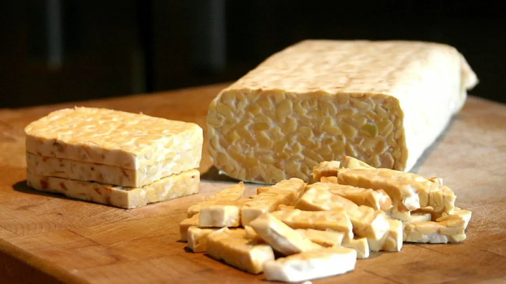
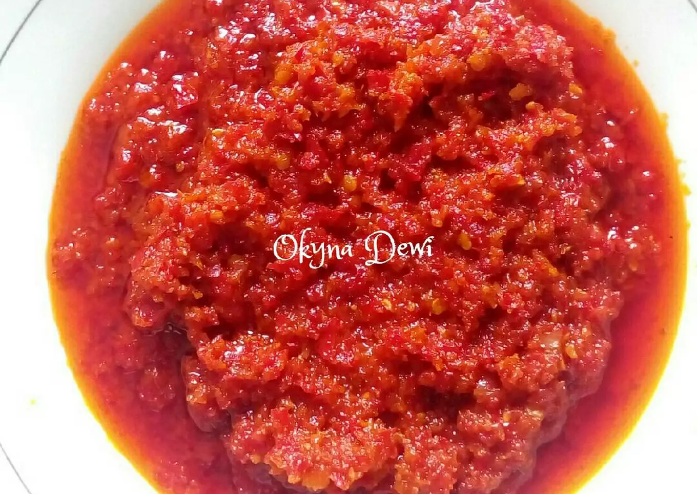
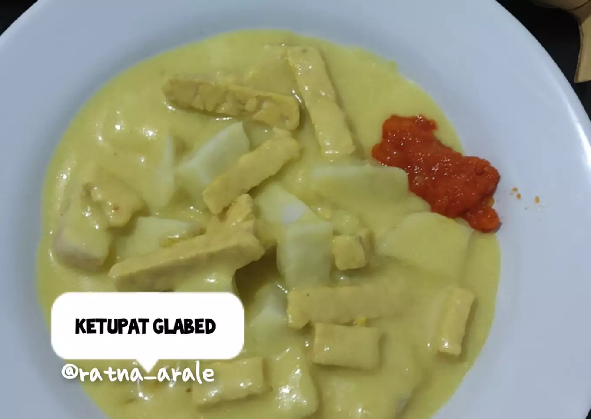

Sarapan ala warga Brebes yaitu kupat glabed. kupat glabed terdiri dari ketupat, sayur, pepaya muda pedas, potongan daging sapi, dan tempe
Nah, untuk membuat kupat glabed coba cara berikut ini.:
Tumis bumbu halus kuning, sereh dan bawang bombay cincang, sampai harum dan matang. Sekitar 5-7 menit
Masukkan tempe, aduk-aduk
Masukkan santan, gula dan garam. Masak pakai api kecil selama 15-30 menit, jangan ditinggal. Pastikan aduk-aduk santan tidak pecah. kemudian sisihkan
Tumis bumbu halus merah dengan minyak selama 5-7 menit dengan api sedang
Tambahkan air, masak hingga minyak diatas dan warna berubah lebih gelap dengan api kecil selama 30-45 menit
karena glabed berarti nempel/menyelimuti lidah, maka diberikan tepung beras agar mengental. Agar yang lain bisa ikut makan, makanya saya sajikan per serving di wajan lain
Kalau saya per serving ditambahkan larutan tepung beras 1/2 sdm tepung beras+air 50 ml+5 sendok sayur, sayur kuah kuning. ini di api kecil yang lain
cara penyajiannya adalah potong ketupat, beri kuah kuning ketupat+ 1 sdm bumbu merah. Tambah Kerupuk kuning